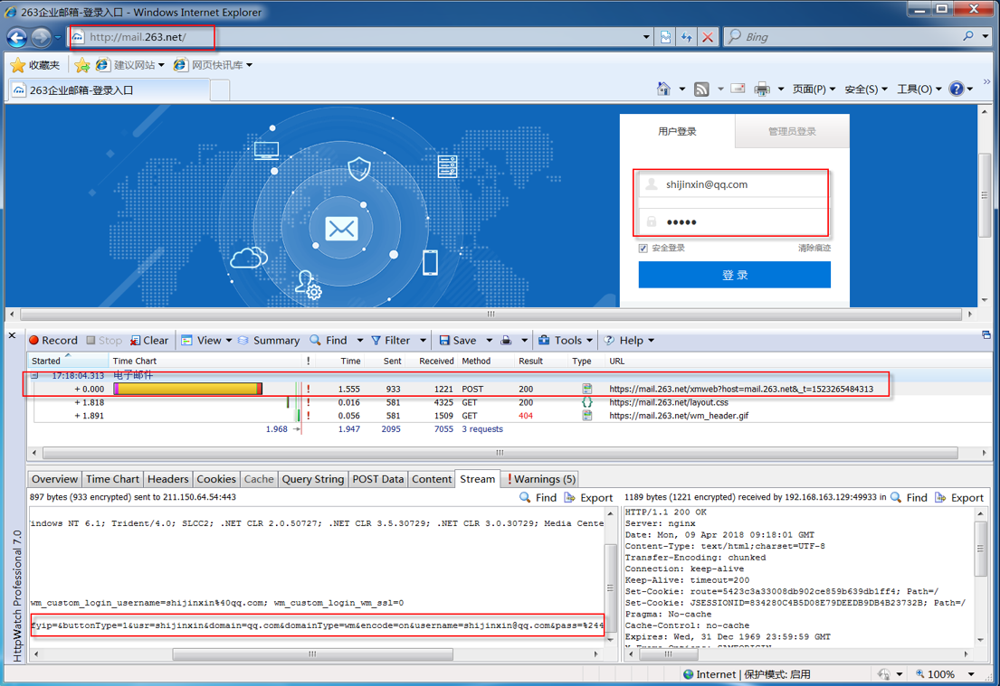

非功能测试---可靠性
可靠性
软件使用者期望软件能够无误运行。可靠性是度量软件如何在主流情形和非预期情形下维持它的功能，有时也包括软件出错时的自恢复能力。
什么时候考虑？
与人身、财产安全相关的---金融、保险、医疗系统
关注点：
安全性：登录时密码是否进行加密以及密码是否容易破解
SQL注入：输入特殊符号使在数据库中生效：% _ '
示例---263.mail.net
登录时使用httpwatch抓取数据----查看请求实体

账户名均为：shijinxin@qq.com
第一次密码为：111111
chr=gb&func=login&isp_domain=&verifycookie=&verifyip=&buttonType=1&usr=shijinxin&domain=qq.com&domainType=wm&encode=on&username=shijinxin@qq.com&pass=%24491%3B%24491%3B%24491%3B%24491%3B%24491%3B%24491%3B&safelogin=on
第二次密码为：222222
chr=gb&func=login&isp_domain=&verifycookie=&verifyip=&buttonType=1&usr=shijinxin&domain=qq.com&domainType=wm&encode=on&username=shijinxin@qq.com&pass=%24501%3B%24501%3B%24501%3B%24501%3B%24501%3B%24501%3B&safelogin=on
第三次密码为：333333
chr=gb&func=login&isp_domain=&verifycookie=&verifyip=&buttonType=1&usr=shijinxin&domain=qq.com&domainType=wm&encode=on&username=shijinxin@qq.com&pass=%24511%3B%24511%3B%24511%3B%24511%3B%24511%3B%24511%3B&safelogin=on
发现，抓取到的请求数据是有规律的，推测出密码为123456时的请求数据，并验证123456
chr=gb&func=login&isp_domain=&verifycookie=&verifyip=&buttonType=1&usr=shijinxin&domain=qq.com&domainType=wm&encode=on&username=shijinxin@qq.com&pass=%24491%3B%24501%3B%24511%3B%24521%3B%24531%3B%24541%3B&safelogin=on